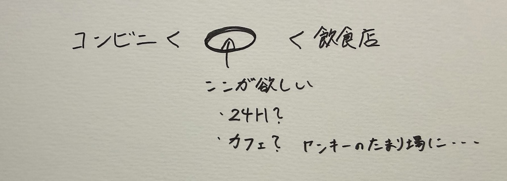

世の中に存在する課題
世の中に存在する課題
深夜営業しているカフェがほとんどない

大学生の活動時間は深夜が多いと思うが、深夜ドライブしている際にサクッと寄れるカフェのような場所がないことに困ることがある。
やっている店は、コンビニや居酒屋、ラーメン屋ばかりで気軽に入れるような24時間営業の店が欲しいところである。
求めているのは
コンビニ以上ファミレス未満
といったところであろうか、、
古くなったものを見捨てるのが早い
タイトルでは古くなったものと表したが、自分は特に車でこの問題を感じた。
古い車に乗っている以上、故障やトラブルはつきものであると思うが、部品を交換するとなった時に
ディーラーではもう
廃盤となっていて取扱していない場合
があって困ることがあった。
また、カスタム部品も新しいものばかり出てくるから古い車に乗っている層をターゲットにすれば何か需要があるのではないだろうか。
モニターやタブレットで注文の店が増えているけど、高齢者には厳しい
過去に何度か高齢の人が注文の仕方で戸惑っているのをみたことがある
店によってUIが違ったりして、若い自分たちでも戸惑うことがあるからなんとかならないのだろうか